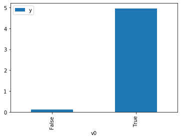
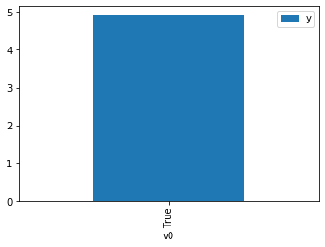

DoWhy 因果 API Demo¶
我们展示了一个添加因果扩展的简单示例 to any dataframe.
[1]:
import os, sys
sys.path.append(os.path.abspath("../../../"))
import dowhy.datasets
import dowhy.api
import numpy as np
import pandas as pd
from statsmodels.api import OLS
%matplotlib inline
获得因果模型和数据¶
通过 dowhy 的数据模块，获得一个数据框以及生成该数据的因果模型，然后实现 \(do\)-Calculus 生成 Counterfactuals 来研究相关性质。
[2]:
data = dowhy.datasets.linear_dataset(beta=5,
num_common_causes=1,
num_instruments = 0,
num_samples=1000,
treatment_is_binary=True)
df = data['df']
df['y'] = df['y'] + np.random.normal(size=len(df))
# Adding noise to data. Without noise, the variance in Y|X, Z is zero, and mcmc fails.
# data['dot_graph'] = 'digraph { v ->y;X0-> v;X0-> y;}'
treatment= data["treatment_name"][0]
outcome = data["outcome_name"][0]
common_cause = data["common_causes_names"][0]
df
[2]:
| W0 | v0 | y | |
|---|---|---|---|
| 0 | 0.240697 | True | 4.928414 |
| 1 | 0.000084 | True | 5.173862 |
| 2 | 0.950475 | True | 5.002643 |
| 3 | 1.418750 | True | 4.310699 |
| 4 | -0.332002 | False | 1.383824 |
| ... | ... | ... | ... |
| 995 | 1.875115 | True | 4.329813 |
| 996 | 0.538284 | True | 5.484955 |
| 997 | -0.634770 | False | 1.436272 |
| 998 | 0.594890 | True | 5.336496 |
| 999 | 0.382532 | True | 5.720229 |
1000 rows × 3 columns
[3]:
# data['df'] is just a regular pandas.DataFrame
df.causal.do(x=treatment,
variable_types={treatment: 'b', outcome: 'c', common_cause: 'c'},
outcome=outcome,
common_causes=[common_cause],
proceed_when_unidentifiable=True)\
.groupby(treatment).mean().plot(y=outcome, kind='bar')
WARNING:dowhy.causal_model:Causal Graph not provided. DoWhy will construct a graph based on data inputs.
INFO:dowhy.causal_graph:If this is observed data (not from a randomized experiment), there might always be missing confounders. Adding a node named "Unobserved Confounders" to reflect this.
INFO:dowhy.causal_model:Model to find the causal effect of treatment ['v0'] on outcome ['y']
INFO:dowhy.causal_identifier:Common causes of treatment and outcome:['U', 'W0']
WARNING:dowhy.causal_identifier:If this is observed data (not from a randomized experiment), there might always be missing confounders. Causal effect cannot be identified perfectly.
INFO:dowhy.causal_identifier:Continuing by ignoring these unobserved confounders because proceed_when_unidentifiable flag is True.
INFO:dowhy.causal_identifier:Instrumental variables for treatment and outcome:[]
INFO:dowhy.do_sampler:Using WeightingSampler for do sampling.
INFO:dowhy.do_sampler:Caution: do samplers assume iid data.
[3]:
<matplotlib.axes._subplots.AxesSubplot at 0x1c29d94990>

[4]:
df.causal.do(x={treatment: 1},
variable_types={treatment:'b', outcome: 'c', common_cause: 'c'},
outcome=outcome,
method='weighting',
common_causes=[common_cause],
proceed_when_unidentifiable=True)\
.groupby(treatment).mean().plot(y=outcome, kind='bar')
WARNING:dowhy.causal_model:Causal Graph not provided. DoWhy will construct a graph based on data inputs.
INFO:dowhy.causal_graph:If this is observed data (not from a randomized experiment), there might always be missing confounders. Adding a node named "Unobserved Confounders" to reflect this.
INFO:dowhy.causal_model:Model to find the causal effect of treatment ['v0'] on outcome ['y']
INFO:dowhy.causal_identifier:Common causes of treatment and outcome:['U', 'W0']
WARNING:dowhy.causal_identifier:If this is observed data (not from a randomized experiment), there might always be missing confounders. Causal effect cannot be identified perfectly.
INFO:dowhy.causal_identifier:Continuing by ignoring these unobserved confounders because proceed_when_unidentifiable flag is True.
INFO:dowhy.causal_identifier:Instrumental variables for treatment and outcome:[]
INFO:dowhy.do_sampler:Using WeightingSampler for do sampling.
INFO:dowhy.do_sampler:Caution: do samplers assume iid data.
[4]:
<matplotlib.axes._subplots.AxesSubplot at 0x1c29eae710>

[5]:
cdf_1 = df.causal.do(x={treatment: 1},
variable_types={treatment: 'b', outcome: 'c', common_cause: 'c'},
outcome=outcome,
dot_graph=data['dot_graph'],
proceed_when_unidentifiable=True)
cdf_0 = df.causal.do(x={treatment: 0},
variable_types={treatment: 'b', outcome: 'c', common_cause: 'c'},
outcome=outcome,
dot_graph=data['dot_graph'],
proceed_when_unidentifiable=True)
INFO:dowhy.causal_model:Model to find the causal effect of treatment ['v0'] on outcome ['y']
INFO:dowhy.causal_identifier:Common causes of treatment and outcome:['U', 'W0']
WARNING:dowhy.causal_identifier:If this is observed data (not from a randomized experiment), there might always be missing confounders. Causal effect cannot be identified perfectly.
INFO:dowhy.causal_identifier:Continuing by ignoring these unobserved confounders because proceed_when_unidentifiable flag is True.
INFO:dowhy.causal_identifier:Instrumental variables for treatment and outcome:[]
INFO:dowhy.do_sampler:Using WeightingSampler for do sampling.
INFO:dowhy.do_sampler:Caution: do samplers assume iid data.
INFO:dowhy.causal_model:Model to find the causal effect of treatment ['v0'] on outcome ['y']
INFO:dowhy.causal_identifier:Common causes of treatment and outcome:['U', 'W0']
WARNING:dowhy.causal_identifier:If this is observed data (not from a randomized experiment), there might always be missing confounders. Causal effect cannot be identified perfectly.
INFO:dowhy.causal_identifier:Continuing by ignoring these unobserved confounders because proceed_when_unidentifiable flag is True.
INFO:dowhy.causal_identifier:Instrumental variables for treatment and outcome:[]
INFO:dowhy.do_sampler:Using WeightingSampler for do sampling.
INFO:dowhy.do_sampler:Caution: do samplers assume iid data.
[6]:
cdf_0
[6]:
| W0 | v0 | y | propensity_score | weight | |
|---|---|---|---|---|---|
| 0 | -0.701821 | False | -0.183813 | 0.827329 | 1.208708 |
| 1 | 0.566814 | False | -0.378917 | 0.223957 | 4.465139 |
| 2 | -0.072888 | False | -0.444856 | 0.543380 | 1.840333 |
| 3 | -1.369989 | False | -0.646138 | 0.954634 | 1.047522 |
| 4 | 0.407697 | False | 1.122292 | 0.291034 | 3.436021 |
| ... | ... | ... | ... | ... | ... |
| 995 | 1.481427 | False | -1.116987 | 0.036675 | 27.266477 |
| 996 | 0.378184 | False | 0.581096 | 0.304702 | 3.281893 |
| 997 | 1.291855 | False | 0.696985 | 0.054761 | 18.261136 |
| 998 | 1.003645 | False | 1.358347 | 0.098840 | 10.117335 |
| 999 | 0.898615 | False | -1.507249 | 0.121578 | 8.225183 |
1000 rows × 5 columns
[7]:
cdf_1
[7]:
| W0 | v0 | y | propensity_score | weight | |
|---|---|---|---|---|---|
| 0 | 1.645192 | True | 3.027437 | 0.974193 | 1.026490 |
| 1 | 0.263406 | True | 3.968999 | 0.638951 | 1.565066 |
| 2 | 1.868578 | True | 4.441714 | 0.984104 | 1.016152 |
| 3 | 0.830910 | True | 4.575607 | 0.861479 | 1.160794 |
| 4 | 2.290609 | True | 4.205689 | 0.993697 | 1.006343 |
| ... | ... | ... | ... | ... | ... |
| 995 | 1.852278 | True | 5.378302 | 0.983530 | 1.016746 |
| 996 | 2.451362 | True | 3.075562 | 0.995576 | 1.004443 |
| 997 | 1.513352 | True | 4.964406 | 0.965743 | 1.035473 |
| 998 | 1.085572 | True | 4.875919 | 0.916186 | 1.091482 |
| 999 | 1.944332 | True | 6.514778 | 0.986526 | 1.013658 |
1000 rows × 5 columns
对比线性回归模型¶
First, estimating the effect using the causal dataframe, and the 95% confidence interval.
[8]:
(cdf_1['y'] - cdf_0['y']).mean()
[8]:
$\displaystyle 4.748886311602873$
[9]:
1.96*(cdf_1['y'] - cdf_0['y']).std() / np.sqrt(len(df))
[9]:
$\displaystyle 0.08828099517898987$
Comparing to the estimate from OLS.
[10]:
model = OLS(np.asarray(df[outcome]), np.asarray(df[[common_cause, treatment]], dtype=np.float64))
result = model.fit()
result.summary()
[10]:
| Dep. Variable: | y | R-squared (uncentered): | 0.951 |
|---|---|---|---|
| Model: | OLS | Adj. R-squared (uncentered): | 0.951 |
| Method: | Least Squares | F-statistic: | 9757. |
| Date: | Thu, 19 Mar 2020 | Prob (F-statistic): | 0.00 |
| Time: | 21:28:02 | Log-Likelihood: | -1421.4 |
| No. Observations: | 1000 | AIC: | 2847. |
| Df Residuals: | 998 | BIC: | 2857. |
| Df Model: | 2 | ||
| Covariance Type: | nonrobust |
| coef | std err | t | P>|t| | [0.025 | 0.975] | |
|---|---|---|---|---|---|---|
| x1 | 0.1327 | 0.038 | 3.493 | 0.000 | 0.058 | 0.207 |
| x2 | 4.9106 | 0.060 | 82.020 | 0.000 | 4.793 | 5.028 |
| Omnibus: | 2.153 | Durbin-Watson: | 1.943 |
|---|---|---|---|
| Prob(Omnibus): | 0.341 | Jarque-Bera (JB): | 2.129 |
| Skew: | -0.113 | Prob(JB): | 0.345 |
| Kurtosis: | 2.995 | Cond. No. | 3.34 |
Warnings:
[1] Standard Errors assume that the covariance matrix of the errors is correctly specified.